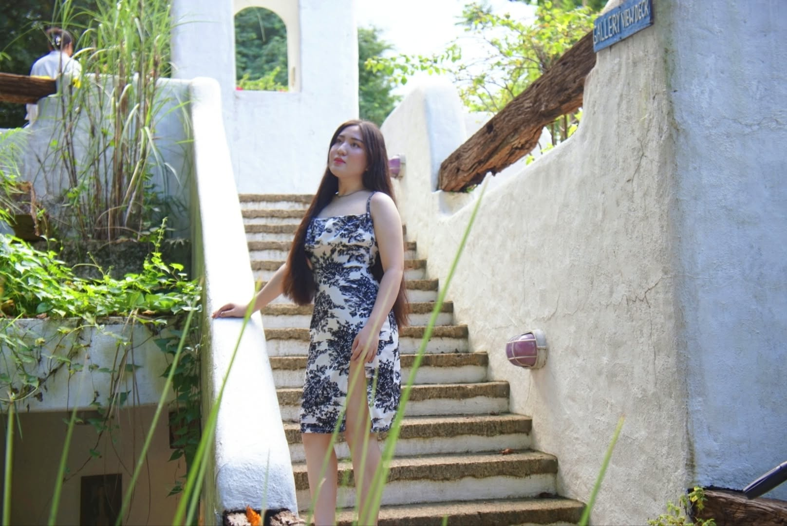
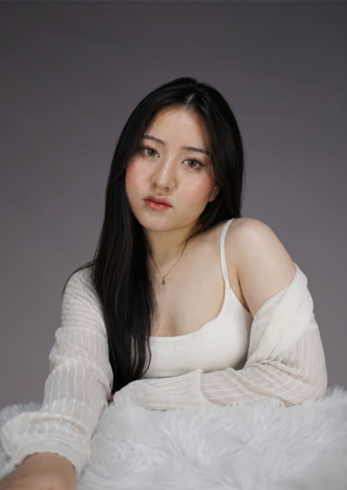

A LITTLE INTRODUCTION
HELLO, I'M
Kylie Russel N. Mercurio.
A collection of thoughts, projects, and things I choose to create.

A LITTLE ABOUT ME
Behind the creative mind.
Hi, I'm Kylie Russel N. Mercurio, but you can call me KayKay. I'm a third-year Bachelor of Arts in Multimedia Studies student from Antipolo, Rizal. Driven by a deep curiosity for creative mediums, I explore different ways to visually tell stories and express ideas.
This website is a collection of the things I've learned, created, and worked on so far.
Always creating, always learning.

THINGS I'VE CREATED
Passion Projects.
A collection of personal projects, creative experiments, and stories brought to life through different mediums.
CONCEPTUAL PHOTOGRAPHY
Moonlit Dreams
A dreamlike photoshoot featuring a white dress, dandelion flowers, candles, and a foil background. Created to capture the beauty of small details and the feeling of being in a dream.
CONCEPTUAL PHOTOGRAPHY
Ophelia
A conceptual photoshoot inspired by delicate details and melancholic imagery. Featuring silver foil, pearls, gems, hydrangeas, and a mirror to create a visual story.
PERSONAL DOCUMENTATION
Life in Frames
A personal documentation project about capturing everyday experiences, little moments, and memories through photographs and videos.
AUDIO PRODUCTION
Benji, the Bad Day, and Me
An audiobook production project where I handled audio editing, mixing, sound effects, and background instrumentals using Tracktion Waveform.
Outside Academics
Things I love.
A few things that make me who I am, beyond the things I create.
CREATE
✿
Creative Things
- Video editing and graphic design
- Photography and documenting moments
- Painting, drawing, and trying new art styles
MUSIC
♫
Music & Sounds
- Singing and playing musical instruments
- Finding new songs and artists to listen to
PLAY
♡
Entertainment
- Genshin, Valorant, Mobile Legends, and Roblox
- Cozy games, movies, series, and random videos
LIFE
☾
Life Lately
- Spending time with my seven cats
- Learning new skills and trying random hobbies
- Exploring new places and trying new food
- Getting randomly obsessed with something new
Contact
Want to reach me? You can find me here: